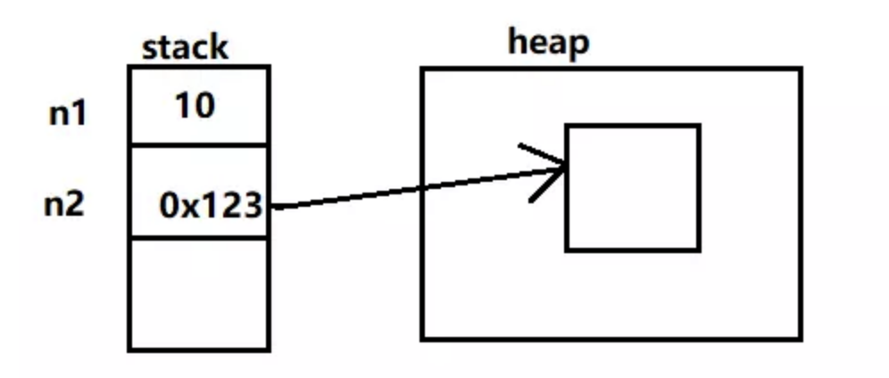

六年前，我从苏州回到洛阳，抱着一幅“海归”的心态，投了不少简历，也“约谈”了不少面试官，但仅有两三个令我感到满意。其中有一位叫老马，至今还活在我的手机通讯录里。他当时扔了一个面试题把我砸懵了：说说基本类型和包装类型的区别吧。
我当时二十三岁，正值青春年华，从事 Java 编程已有 N 年经验（N < 4），自认为所有的面试题都能对答如流，结果没想到啊，被“刁难”了——原来洛阳这块互联网的荒漠也有技术专家啊。现在回想起来，脸上不自觉地泛起了羞愧的红晕：主要是自己当时太菜了。不管怎么说，是时候写篇文章剖析一下基本类型和包装类型的区别了。
Java 的每个基本类型都对应了一个包装类型，比如说 int 的包装类型为 Integer，double 的包装类型为 Double。基本类型和包装类型的区别主要有以下 4 点。
别小看这一点区别，它使得包装类型可以应用于 POJO 中，而基本类型则不行。
POJO 是什么呢？这里稍微说明一下。
POJO 的英文全称是 Plain Ordinary Java Object，翻译一下就是，简单无规则的 Java 对象，只有属性字段以及 setter 和 getter 方法，示例如下。
class Writer {
private Integer age;
private String name;
public Integer getAge() {
return age;
}
public void setAge(Integer age) {
this.age = age;
}
public String getName() {
return name;
}
public void setName(String name) {
this.name = name;
}
}
和 POJO 类似的，还有数据传输对象 DTO（Data Transfer Object，泛指用于展示层与服务层之间的数据传输对象）、视图对象 VO（View Object，把某个页面的数据封装起来）、持久化对象 PO（Persistant Object，可以看成是与数据库中的表映射的 Java 对象）。
那为什么 POJO 的属性必须要用包装类型呢？
《阿里巴巴 Java 开发手册》上有详细的说明，我们来大声朗读一下（预备，起）。
数据库的查询结果可能是 null，如果使用基本类型的话，因为要自动拆箱（将包装类型转为基本类型，比如说把 Integer 对象转换成 int 值），就会抛出
NullPointerException的异常。
泛型不能使用基本类型，因为使用基本类型时会编译出错。
List<int> list = new ArrayList<>(); // 提示 Syntax error, insert "Dimensions" to complete ReferenceType
List<Integer> list = new ArrayList<>();
为什么呢？因为泛型在编译时会进行类型擦除，最后只保留原始类型，而原始类型只能是 Object 类及其子类——基本类型是个特例。
基本类型在栈中直接存储的具体数值，而包装类型则存储的是堆中的引用。

很显然，相比较于基本类型而言，包装类型需要占用更多的内存空间。假如没有基本类型的话，对于数值这类经常使用到的数据来说，每次都要通过 new 一个包装类型就显得非常笨重。
两个包装类型的值可以相同，但却不相等——这句话怎么理解呢？来看一段代码就明明白白了。
Integer chenmo = new Integer(10);
Integer wanger = new Integer(10);
System.out.println(chenmo == wanger); // false
System.out.println(chenmo.equals(wanger )); // true
两个包装类型在使用“==”进行判断的时候，判断的是其指向的地址是否相等。chenmo 和 wanger 两个变量使用了 new 关键字，导致它们在“==”的时候输出了 false。
而 chenmo.equals(wanger) 的输出结果为 true，是因为 equals 方法内部比较的是两个 int 值是否相等。源码如下。
private final int value;
public int intValue() {
return value;
}
public boolean equals(Object obj) {
if (obj instanceof Integer) {
return value == ((Integer)obj).intValue();
}
return false;
}
瞧，虽然 chenmo 和 wanger 的值都是 10，但他们并不相等。换句话说就是：将“==”操作符应用于包装类型比较的时候，其结果很可能会和预期的不符。
既然有了基本类型和包装类型，肯定有些时候要在它们之间进行转换。把基本类型转换成包装类型的过程叫做装箱（boxing）。反之，把包装类型转换成基本类型的过程叫做拆箱（unboxing）。
在 Java SE5 之前，开发人员要手动进行装拆箱，比如说：
Integer chenmo = new Integer(10); // 手动装箱
int wanger = chenmo.intValue(); // 手动拆箱
Java SE5 为了减少开发人员的工作，提供了自动装箱与自动拆箱的功能。
Integer chenmo = 10; // 自动装箱
int wanger = chenmo; // 自动拆箱
上面这段代码使用 JAD 反编译后的结果如下所示：
Integer chenmo = Integer.valueOf(10);
int wanger = chenmo.intValue();
也就是说，自动装箱是通过 Integer.valueOf() 完成的；自动拆箱是通过 Integer.intValue() 完成的。理解了原理之后，我们再来看一道老马当年给我出的面试题。
// 1）基本类型和包装类型
int a = 100;
Integer b = 100;
System.out.println(a == b);
// 2）两个包装类型
Integer c = 100;
Integer d = 100;
System.out.println(c == d);
// 3）
c = 200;
d = 200;
System.out.println(c == d);
答案是什么呢？有举手要回答的吗？答对的奖励一朵小红花哦。
第一段代码，基本类型和包装类型进行 == 比较，这时候 b 会自动拆箱，直接和 a 比较值，所以结果为 true。
第二段代码，两个包装类型都被赋值为了 100，这时候会进行自动装箱，那 == 的结果会是什么呢？
我们之前的结论是：将“==”操作符应用于包装类型比较的时候，其结果很可能会和预期的不符。那结果是 false？但这次的结果却是 true，是不是感觉很意外？
第三段代码，两个包装类型重新被赋值为了 200，这时候仍然会进行自动装箱，那 == 的结果会是什么呢？
吃了第二段代码的亏后，是不是有点怀疑人生了，这次结果是 true 还是 false 呢？扔个硬币吧，哈哈。我先告诉你结果吧，false。
为什么？为什么？为什么呢？
事情到了这一步，必须使出杀手锏了——分析源码吧。
之前我们已经知道了，自动装箱是通过 Integer.valueOf() 完成的，那我们就来看看这个方法的源码吧。
public static Integer valueOf(int i) {
if (i >= IntegerCache.low && i <= IntegerCache.high)
return IntegerCache.cache[i + (-IntegerCache.low)];
return new Integer(i);
}
难不成是 IntegerCache 在作怪？你猜对了！
private static class IntegerCache {
static final int low = -128;
static final int high;
static final Integer cache[];
static {
// high value may be configured by property
int h = 127;
int i = parseInt(integerCacheHighPropValue);
i = Math.max(i, 127);
h = Math.min(i, Integer.MAX_VALUE - (-low) -1);
high = h;
cache = new Integer[(high - low) + 1];
int j = low;
for(int k = 0; k < cache.length; k++)
cache[k] = new Integer(j++);
// range [-128, 127] must be interned (JLS7 5.1.7)
assert IntegerCache.high >= 127;
}
}
大致瞟一下这段代码你就全明白了。-128 到 127 之间的数会从 IntegerCache 中取，然后比较，所以第二段代码（100 在这个范围之内）的结果是 true，而第三段代码（200 不在这个范围之内，所以 new 出来了两个 Integer 对象）的结果是 false。
看完上面的分析之后，我希望大家记住一点：当需要进行自动装箱时，如果数字在 -128 至 127 之间时，会直接使用缓存中的对象，而不是重新创建一个对象。
自动装拆箱是一个很好的功能，大大节省了我们开发人员的精力，但也会引发一些麻烦，比如下面这段代码，性能就很差。
long t1 = System.currentTimeMillis();
Long sum = 0L;
for (int i = 0; i < Integer.MAX_VALUE;i++) {
sum += i;
}
long t2 = System.currentTimeMillis();
System.out.println(t2-t1);
sum 由于被声明成了包装类型 Long 而不是基本类型 long，所以 sum += i 进行了大量的拆装箱操作（sum 先拆箱和 i 相加，然后再装箱赋值给 sum），导致这段代码运行完花费的时间足足有 2986 毫秒；如果把 sum 换成基本类型 long，时间就仅有 554 毫秒，完全不一个等量级啊。